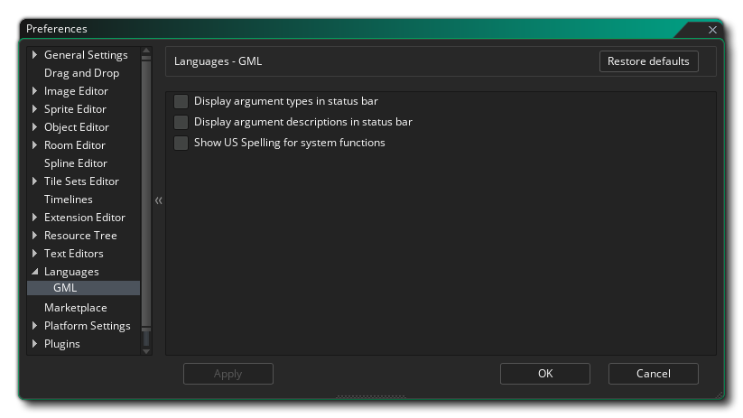

语言偏好设置被用于定义编程时的一些语言特性将会被如何显示在 GameMaker Studio 2 的 IDE 中。GML的选项如下所示：
- 在状态栏中显示参数类型：该选项关系到使用你自己的JSDoc标注过的自定义脚本（Script）时是否显示各种参数等……（详情请见 这里）。当该选项被勾选并且你在脚本中标注了参数类型的时候，它们会显示在状态栏当中，并被花括号括起来。该选项默认关闭。
- 在状态栏中显示参数描述：勾选该选项之后你在自定义脚本中使用JSDoc标记给出的描述都会在编辑器窗口底部的状态栏中显示出来。该选项默认关闭。
- 显示系统函数的美式拼写：默认情况下 GameMaker Studio 2 使用英式英语拼写，例如 draw_text_colour ，然而你可能并不习惯，因此你可以切换到美式拼写，函数就会变成 draw_text_color。该选项默认关闭。